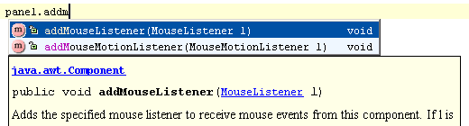

|
Shortcuts such as &shortcut:QuickJavaDoc; (Show Quick Javadoc), &shortcut:ParameterInfo; (Show Parameter Info),
&shortcut:GotoDeclaration; (Go to Declaration), &shortcut:ExternalJavaDoc; (External Javadoc) and others can be used not only in the editor, but
in the code completion popup list as well.
 |